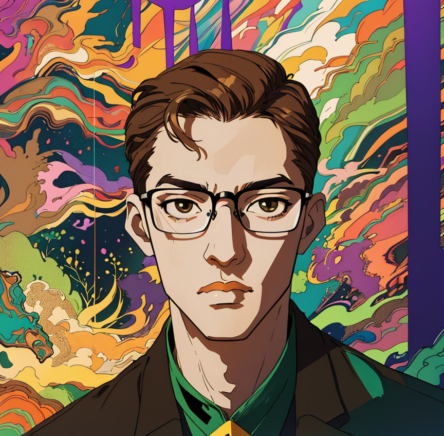

Enchanté!
Je suis Nathan Cerisara.
Si vous souhaitez en savoir plus sur moi:
À l'âge précoce de dix ans, ou peut-être même quelques années de moins, se dessinaient les prémices de ma familiarité avec l'outil informatique. Dès lors, s'ouvraient devant moi les portes de l'apprentissage de l'informatique, un domaine qui suscita rapidement
ma passion. Une inclination naissante pour la programmation de jeux et le développement de projets, en symbiose avec les vicissitudes de ma vie, s'y manifesta.
Affectionnant le noble dessein de simplifier mon quotidien, j'ai entrepris de faire de l'automatisation une muse bienveillante. Cet élan créatif m'a tout naturellement guidé vers les vastes horizons de l'intelligence artificielle, un domaine fascinant,
pétri de créativité débridée.
La créativité, tel un joyau précieux, occupe une place de choix dans mon univers. Mon amour indéfectible pour l'art, en particulier les formes artistiques telles que les images numériques, l'art géométrique, la modélisation 3D, l'animation, et bien d'autres,
confère une palette variée et riche à mes aspirations artistiques.
Au fil des notes et des rythmes, la musique s'est insinuée dans les replis de mon âme. Mon ouïe déguste une palette variée, mais mes préférences se nichent avec délice dans les méandres du métal, les trésors intemporels de la musique classique, et les
délices électriques de la musique électronique. Récemment, j'ai entrepris l'apprentissage envoûtant de la guitare électrique, une mélodieuse aventure qui a commencé à résonner dans les échos du temps.
Parcourant les allées de l'éducation, mes premiers pas scolaires résonnèrent à Moivrons, enchâssant une part substantielle de mon école primaire. Puis, une brève incursion éducative à Nomeny colora ce chapitre initial.
La transition vers le collège m'invita à entamer ma 6ème au sein de l'établissement éducatif de Nomeny, avant de conclure ce cycle à Heillecourt. Le terme de mes années collégiennes marqua le début d'une nouvelle étape, celle du lycée.
Sous l'égide du lycée Henry-Poincaré, je fis montre de ma détermination en décrochant un Baccalauréat avec mention très bien. En première, mes inclinations se portèrent vers les spécialités Mathématiques, NSI et Physique, puis en terminale, je consacrai
mes efforts aux Mathématiques et à la NSI, agrémentées de l'option érudite des Mathématiques Expertes.
La suite de mon aventure intellectuelle prit la forme de deux années au sein des classes préparatoires aux grandes écoles, l'éminente CPGE MP2I/MPI*, accueillie par les murs savants du lycée Louis-Le-Grand.
Aujourd'hui, les prémices de ma carrière d'ingénieur prennent forme à l'école Télécom Physique Strasbourg. Orienté vers la filière informatique et Réseaux, je me prépare à plonger dans les arcanes captivants de cette discipline.
Douze années durant, ma vie s'est inscrite dans le cadre enchanteur d'un humble village du nom de Sivry. Là, entre les méandres du quotidien, j'ai tissé les fils de mon existence, empreinte d'une simplicité bucolique.
Les méandres de la vie m'ont guidé vers une nouvelle destination lorsque mes parents décidèrent de faire route vers Heillecourt, un écrin paisible niché aux abords de la ville de Nancy. La transition, bien que marquée par le changement, ajouta une nouvelle
dimension à mon parcours.
Le souffle cosmopolite de la Ville Lumière m'aspira pendant deux années, celles de ma classe préparatoire au prestigieux lycée Louis-Le-Grand à Paris. Entre la poussière des tableaux noirs et les couloirs remplis d'histoires, cette période parisienne
a laissé une empreinte singulière dans les replis de ma mémoire.
À présent, les vents de l'existence m'ont conduit vers les rives de Strasbourg. Cette ville, aux contours chargés d'histoire, devient le cadre enchanteur où je façonne le présent et imagine l'avenir qui s'esquisse devant moi.